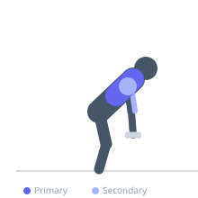
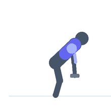

Exercise guide / Single-Arm Dumbbell Row
Single-Arm Dumbbell Row
The single-arm dumbbell row is a unilateral horizontal pulling exercise. With one hand and knee braced on a bench, the lifter rows a dumbbell toward the hip with the working arm. The unilateral setup allows a greater range of motion than bilateral rows and helps correct strength imbalances between sides.
Primary muscles
latissimus dorsi
rhomboid major
Secondary muscles
teres major
deltoid posterior
biceps brachii long head
brachialis
Stabilizers
transverse abdominis
Equipment
Dumbbell (Fixed)
Flat Bench


Starting position
- Place one hand and the same-side knee on a flat bench, forming a stable support. Hold a dumbbell in the opposite hand with arm hanging straight down toward the floor. Keep the spine neutral and parallel to the floor.
Setup
- Position the supporting hand and knee so the torso is flat. The foot of the working side should be flat on the floor beside the bench.
Steps
- With the core braced and spine neutral, row the dumbbell toward your hip by driving the elbow toward the ceiling.
- At the top, squeeze the shoulder blade toward the spine and hold briefly.
- Lower the dumbbell under control to the starting position with full arm extension.
Coaching cues
- Drive your elbow toward the ceiling, not your hand
- Think about putting the dumbbell in your back pocket
Breathing
- Exhale on the row, inhale on the descent.
Range of motion
- Full arm extension at the bottom, upper arm at or above parallel at the top.
Tempo
- 2-1-1-0
Common mistakes
- Rotating the torso aggressively to gain momentum
- Pulling the dumbbell toward the shoulder instead of the hip
- Not fully extending the arm at the bottom
Safety
- Ensure the supporting knee and hand are firmly planted to avoid lower back strain
Training
- hypertrophy: 8–15 reps
- endurance: 15–20 reps
- hypertrophy: 3–4 sets
- endurance: 2–3 sets
- Rest: {'hypertrophy': 75, 'endurance': 45}